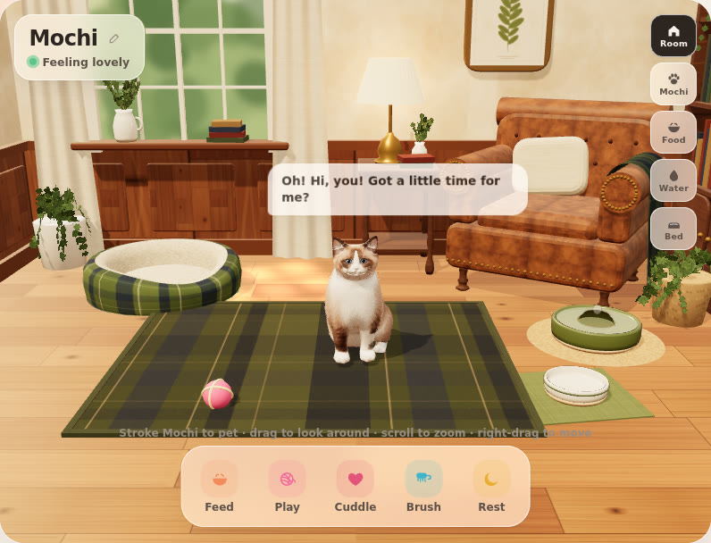

Mochi holiday rooms and accessories
Two holiday rooms are Mochi's first rewards: Thanksgiving sketches by October 31, Christmas by November 15. Mochi's room stays the same and only the decorations change, plus a few small accessories for her.
The room stays the same
Keep the furniture where it is; only decorations, lighting and the window view change. Mochi's walking paths and jumps depend on this layout. Feel free to trace over this screenshot from the app's Room view.

| Where (from the Room view) | What's there |
|---|---|
| Back wall, left | Tall window with linen curtains, and a long wooden sill below it with books and a white pitcher of greenery |
| Front left | Plaid cat bed, with a potted plant behind it |
| Back wall, centre | Side table with a brass lamp |
| Back wall, centre right | Large abstract painting (cobalt, vermilion, black and chalk white) in a thin pale-oak frame, over the lamp and the chair |
| Right | Tufted leather club chair with a cushion, a bookcase on the wall behind it, a potted plant beside it |
| Front right | Water fountain (round, olive green) and food bowls |
| Floor | Lightly limed natural oak, matte |
| Centre | Olive-and-navy plaid rug |
What to send for each room
Thanksgiving first, then Christmas. For each room, send these six things:
| What | Details | Example |
|---|---|---|
| Overall sketch | The whole room from the app's Room view, showing where every decoration goes. Tracing over the screenshot above is perfect. | Garland along the window sill, wreath above the print |
| 8 to 12 props | A small close-up of each (front and side if the shape isn't obvious), a rough real-life size, where it goes, and what it's made of (matte, glossy, knit, velvet, ceramic, wood, metal) | Pumpkin, 25 cm wide, sill left end, matte orange |
| Colour palette | 5 to 8 colours, as hex codes or paint swatches | Pumpkin #D9822B, cranberry #8E2C3A |
| Lighting | How daytime and evening should feel, and anything that glows | Warm amber evening, candles on the side table |
| Window view | What Mochi sees outside | Falling leaves; snow and a pale blue dusk |
| One or two cat moments | Something she can play with or react to | An ornament she bats, an empty gift box she climbs into |
Ideas to start from: Thanksgiving pumpkins, gourds, a leaf wreath, candles and a knit throw; Christmas tree with lights, stockings, gift boxes, garland and snow outside. Your own ideas are welcome.
What builds well in 3D
Chunky, clear shapes turn into good 3D; very fine detail doesn't. Simplify fine detail into bigger shapes.
| Builds well | Hard: simplify instead |
|---|---|
| Pumpkins, gourds, apples | Tinsel strands: use a soft garland |
| Wreaths and garlands | Thin wire or string: a thicker cord |
| A Christmas tree, string lights as glowing dots | Lettering and signs: a plain shape or symbol |
| Stockings, gift boxes with ribbon | Lots of tiny repeated items (confetti, beads): a few larger ones |
| Candles, lanterns, pillows, a knit throw | See-through or mirror-like surfaces: matte or glossy |
Mochi's accessories
Start with four for Christmas: a bandana, a Santa hat, a collar with a bell, and a bow. Pieces that sit in one spot on the neck or head fit her well. Clothing that covers her body, like sweaters, won't for now.
- Draw each one on a simple cat outline, from the front and the side, sized against her head.
- Neck pieces (collar, bandana, bow) sit on the neck only. Nothing on her body, legs or tail.
- Hats sit between or slightly behind the ears. They must not cover her eyes, ears or whiskers, and shouldn't press on the ears, which move.
- No long dangling parts. A small bell or a short pom-pom is fine.
- Two or three colour options for each piece.
For reference, she's a seal-point ragdoll: cream body, dark brown face mask, ears and tail, and blue eyes. Colours that stand out against cream and dark brown work best.
Halloween in the Hamptons (small surprise)
Nancy Meyers–inspired and understated: warm, glowing jack-o'-lanterns (carved faces kept friendly), a few paper bats, a discreet ghost cushion for the club chair, and a felt bat toy that Mochi bats around the rug instead of her ball. Same room layout and paths. Please send the visual reference by about October 15, in the same format as Thanksgiving.
Christmas
Traditional Scottish red tartan, evergreen, brass and warm white lights. Sketches by November 15, plus the four accessories above.
Format, originality and permission
- Format: photos of paper sketches or PNGs, with notes written right on the drawing. Send them to Merlin.
- Original designs only: no existing characters (no Grinch, no Disney) and no brand logos.
- Permission: we're planning to go commercial, so please confirm in writing (a message to Merlin is fine) that the designs can be used in the app.
- Optional 3D: if you'd like to make a prop in Meshy yourself, send the .glb file, ideally under 2 MB per prop. Free-plan Meshy models require a credit line in the app; a paid plan avoids that, which is simpler commercially.
The app itself: elbrilliant4.github.io/Cat-app